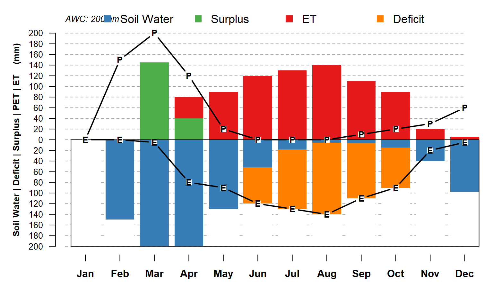
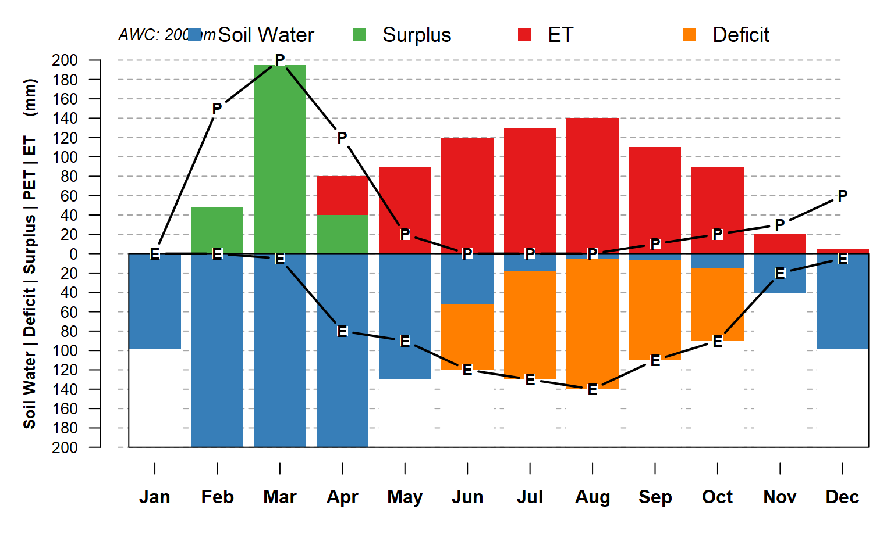

Perform a monthly water balance by "leaky bucket" model, provided by the `hydromad` package.
monthlyWB( AWC, PPT, PET, S_init = AWC, starting_month = 1, rep = 1, keep_last = FALSE )
| AWC | available water-holding capacity (mm) |
|---|---|
| PPT | time-series of monthly PPT (mm), calendar year ordering |
| PET | time-series of monthly PET (mm), calendar year ordering |
| S_init | initial fraction of |
| starting_month | starting month index, 1=January, 9=September |
| rep | number of cycles to run water balance |
| keep_last | keep only the last iteration of the water balance |
a data.frame with the following elements:
PPT: monthly PPT values
PET: monthly PET values
U: monthly U values
S: monthly S values
ET: monthly ET values
D: monthly D values
month: month number
mo: month label
This function depends on the hydromad package.
D.E. Beaudette
if(requireNamespace('hydromad')) { # AWC in mm AWC <- 200 # monthly PET and PPT in mm PET <- c(0,0,5,80,90,120,130,140,110,90,20,5) PPT <- c(0, 150, 200, 120, 20, 0, 0, 0, 10, 20, 30, 60) # run water balance # start with soil AWC "empty" (x.wb <- monthlyWB(AWC, PPT, PET, S_init = 0)) # plot the results par(mar=c(4,4,2,1), bg = 'white') plotWB(WB = x.wb, AWC = AWC) # compute fraction of AWC filled after the last month of simulation (last.S <- x.wb$S[12] / AWC) # re-run the water balance with this value (x.wb <- monthlyWB(AWC, PPT, PET, S_init = last.S)) # not much difference par(mar=c(4,4,2,1), bg = 'white') plotWB(WB = x.wb, AWC = AWC) }#>